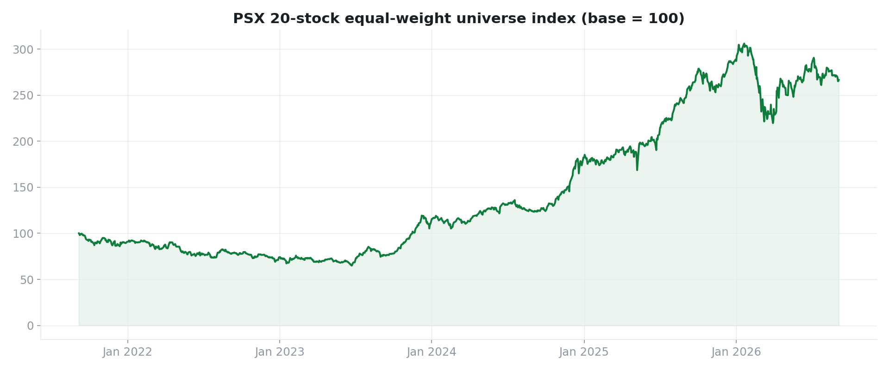
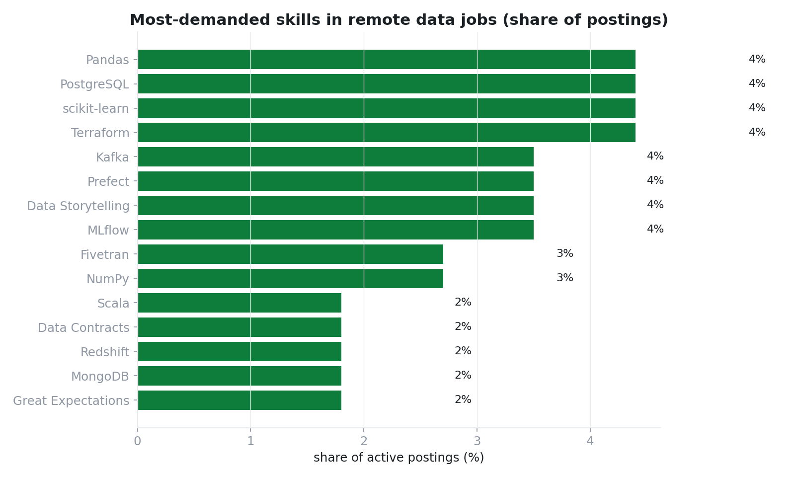
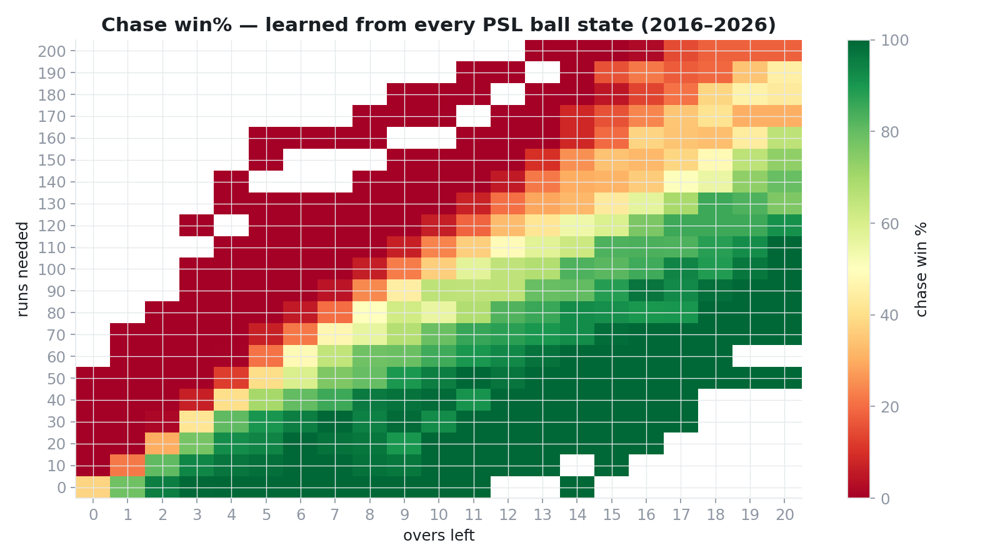

Data Analyst & Analytics Engineer from Islamabad, Pakistan. I build extraction pipelines, dbt-modeled warehouses, automated data-quality tests, and dashboards people actually read — end to end.
Real data, real engineering — each project runs end-to-end with tests and CI.

Fault-tolerant Python extractor pulls 24,600+ daily price records for 20 PSX large-caps plus USD/PKR and SBP policy rates into DuckDB. A dbt layer ships facts & dimensions — including a Type-2 slowly-changing dimension and ASOF currency joins — guarded by 41 automated tests and freshness SLAs. A five-tab Streamlit dashboard serves the insights, refreshed daily by GitHub Actions.
Stack: Python · yfinance · DuckDB · dbt Core · Streamlit · Plotly · GitHub Actions · Parquet
Types a niche, crawls the public Fiverr market, computes real keyword & market intelligence from the crawled sample, and drafts complete, compliance-checked gig packages with an AI layer — three architectures (Express web app, FastAPI growth system, standalone MCP server) in one monorepo.
Stack: TypeScript · Express · Python FastAPI · SQLite · Gemini API

Four public job-board APIs scraped every Monday → an append-snapshot DuckDB warehouse → dbt marts that quantify skill demand, salary bands, and posting lifecycles → a five-tab dashboard. Week-1 result: SQL is in 63% of postings, Python 53%, and GenAI/LLM skills already 22%.
Stack: Python · DuckDB · dbt Core · Streamlit · GitHub Actions

357 matches · 83,799 deliveries (2016–2026) flattened from Cricsheet into a tested dbt warehouse: career leaderboards (Babar 4,380 runs), venue character maps, run-worm match replay, and an explainable empirical win-probability model learned from every chase in league history.
Stack: Python · DuckDB · dbt Core · Streamlit · Plotly · GitHub Actions
What I use day to day.
The short version.
I'm a data analyst & analytics engineer who likes owning the whole pipeline:
extract → load → model → test → serve. My flagship project is a full data warehouse for the
Pakistan Stock Exchange — live extraction, dbt models with SCD2 history, 41 automated data
tests, and a dashboard. I also build data-powered tools (see GigCraft).
Right now I'm sharpening dimensional modeling, Power BI DAX, and semantic layers —
and looking for Data Analyst / Analytics Engineer opportunities.